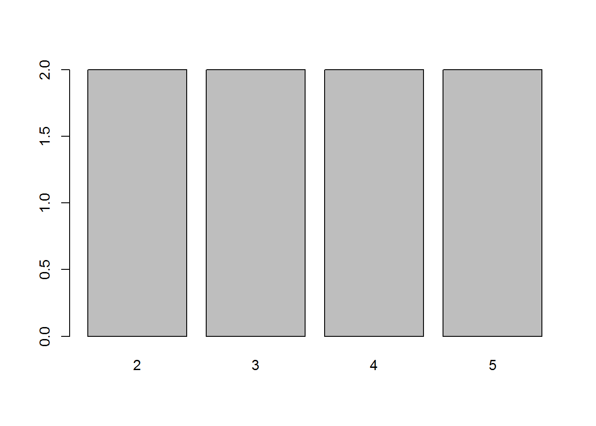
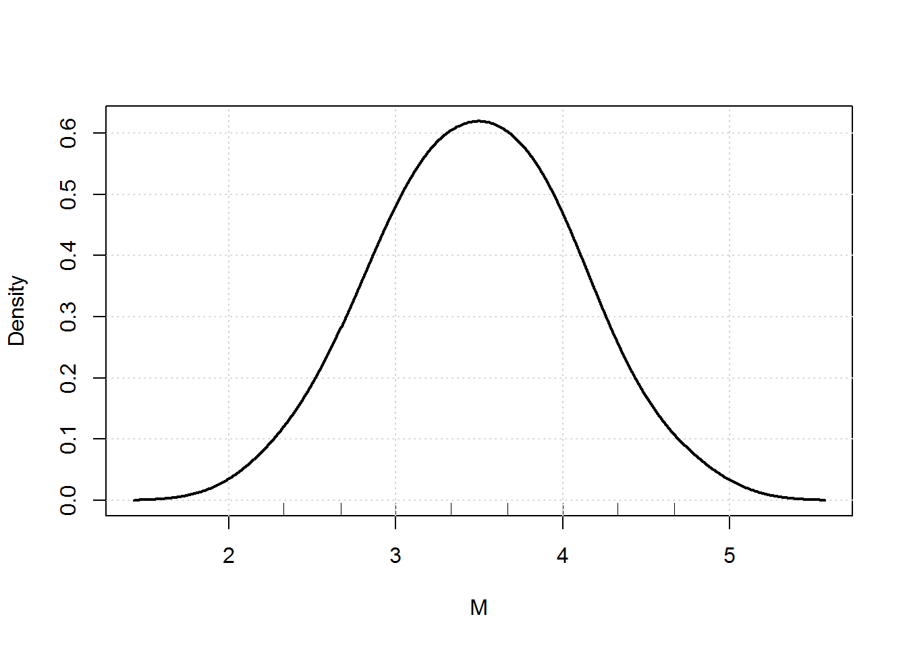

Chapter 7 INFERENCE SUR UN PROTOCOLE UNIVARIE NON STRUCTURE
7.1 Les combinaisons
Dans ce chapitre, nous allons traiter de l’inférence sur les protocoles univarié non structuré. Avec ce type de protocole, l’objectif est de situer le protocole dans l’ensemble des protocoles possibles, c’est-à-dire dans l’espace des échantillons. Quelle que soit l’échelle de mesure de la variable, on peut déterminer celui-ci par combinatoire en calculant l’ensemble des combinaisons possibles.
7.1.1 Calcul de la taille de l’espace des échantillons
L’ensemble des combinaisons de n éléments dans une population de N éléments est l’ensemble des sous-ensembles de n éléments dans une population de N éléments. Le nombre de combinaisons possibles est donné par la formule du nombre de combinaisons :
\(\textrm{C}_{n}^{N} = \binom{N}{n} = \frac{N!}{(N-n)!)}\)
Le symbole à gauche de l’égalité se lit « nombre de combinaisons de n éléments dans N éléments ». La formule de droite nous permet de la calculer. Par exemple, si on cherche à savoir combien de couples sont possibles dans une population de 5 éléments, on peut se représenter intuitivement que chacun des individus peut être associés à chacun des quatre autres. On a donc 20 paires. L’ordre des éléments dans les couples n’ayant pas d’importance, on a 10 couples possibles. Mettons en application la formule de calcul du nombre de combinaisons de deux éléments dans un ensemble de 5 éléments.
\(\textrm{C}_{2}^{5} = \binom{5}{2} = \frac{5!}{(5-2)!)} = \frac{5*4*3*2*1}{2*1*3*2*1} = 10\)
Ici N =5 et n=2. N suivi d’un point d’exclamation se lit factoriel de 5 et se développe en multipliant le nombre par tous les entiers inférieurs. La factorielle de 5 est donc 5*4*3*2*1. De la même manière, la factorielle de 2 est égale à 2*1 et la factorielle de 5-2, c’est-à-dire la factorielle de 3 se développe en 3*2*1. Il ne reste plus qu’à simplifier la fraction en supprimant les facteurs communs. Dans cet exemple, le nombre de combinaisons possibles est donc de 10.
7.1.2 Détermination de l’espace des échantillons
Pour déterminer l’espace des échantillons, nous allons rechercher l’ensemble des combinaisons possibles. Pour éviter d’en oublier, nous allons procéder par ordre. Reprenons notre exemple précédent et posons un tableau comportant 11 lignes, la première indiquant l’identifiant de nos individus.
| S1 | S2 | S3 | S4 | S5 |
|---|---|---|---|---|
| x | x | |||
| x | x | |||
| x | x | |||
| x | x | |||
| x | x | |||
| x | x | |||
| x | x | |||
| x | x | |||
| x | x | |||
| x | x |
Tableau 1: Détermination de l’ensemble des combinaisons possibles
Le premier couple sera composé des deux premiers sujets. Pour le couple suivant, on décalera la croix du sujet 2 d’une case vers la droite, et on continuera de même pour le troisième couple jusqu’à atteindre la dernière colonne, celle du sujet 5, pour le quatrième couple. C’est ensuite la croix du sujet 1 qu’on décale d’une case vers la droite, le second individu du couple étant dans la case juste à droite, et on recommence à décaler la croix du second individu, jusqu’au bout du tableau. On recommence alors à décaler la croix correspondant au premier individu du couple, et on décale à nouveau le dernier. Le dernier couple correspond, bien entendu, aux deux derniers sujets.
Une fois qu’on a déterminé l’ensemble des combinaisons, il faut calculer pour chaque protocole possible la statistique d’échantillonnage. Dans le cas des variables nominales ou catégorisées, la statistique d’échantillonnage est la fréquence. Dans le cas des variables numériques, la statistique d’échantillonnage est la moyenne.
7.1.3 Calcul de la distribution d’échantillonnage
Une fois qu’on a déterminé l’ensemble des combinaisons, il faut calculer pour chaque protocole possible la statistique d’échantillonnage. Dans le cas des variables nominales ou catégorisées, la statistique d’échantillonnage est la fréquence. Dans le cas des variables numériques, la statistique d’échantillonnage est la moyenne.
7.1.3.1 Application à une variable nominale ou catégorisée
Imaginons que nous ayons fait passer un test à nos sujets. La variable dans ce test est la réussite ou l’échec. Les observations pour la population sont données dans la seconde ligne. Les combinaisons ont été déterminées comme précédemment.
| S1 | S2 | S3 | S4 | S5 | F |
|---|---|---|---|---|---|
| R | E | R | R | E | |
| R | E | 0.5 | |||
| R | R | 1 | |||
| R | R | 1 | |||
| R | E | 0,5 | |||
| E | R | 0,5 | |||
| E | R | 0,5 | |||
| E | E | 0 | |||
| R | R | 1 | |||
| R | E | 0,5 | |||
| R | E | 0,5 |
Tableau 2: Calcul de la fréquence sur l’espace des échantillons
La variable étant nominale, on calculera la fréquence des réussites. On aurait pu calculer également la fréquence des échecs qui est le complémentaire des réussites. Dans le premier couple, la fréquence est d’un demi. Elle est de 1 pour le couple suivant. On continue ainsi pour tous les protocoles possibles.
| F | p |
|---|---|
| 0 | 0,1 |
| 0.5 | 0,6 |
| 1 | 0,3 |
Tableau 3: Exemple de distribution d’échantillonnage sur une variable nominale
Après le calcul de la statistique d’échantillonnage, on calcule la distribution d’échantillonnage, c’est-à-dire les proportions d’échantillons associées à chacune des valeurs de la statistique. Dans notre exemple, extrêmement simplifié, trois valeurs de la fréquence sont observées dans l’ensemble des échantillons possibles. La première est la valeur 0 qui correspond à aucune réussite dans l’échantillon, elle n’est observée qu’une fois. La proportion est donc de 1 sur 10 soit 0,1. Pour la seconde valeur de la fréquence, elle a été observée 6 fois sur 10, soit une proportion de 0,6. Enfin la valeur 1 a été observée 3 fois. La proportion est donc de 0,3.
Imaginez que le couple observé soit le couple où les deux sujets ont échoué au test. Peut-on dire qu’il est atypique de la population dont il est issue? Le seuil de typicalité est fixé par convention à .025. La proportion de couples ayant obtenu 0 réussite étant supérieur à ce seuil, on ne pourra pas dire qu’il est atypique.
7.1.3.2 Application à une variable numérique
Les combinaisons sont également utilisables sur les variables numériques. Dans ce cas, la statistique d’échantillonnage est la moyenne. Imaginez que nos sujets soient des enfants et qu’en faisant passer le test, on ait également relevé leur âge.
| S1 | S2 | S3 | S4 | S5 | M |
|---|---|---|---|---|---|
| 10 | 10 | 8 | 7 | 7 | |
| 10 | 10 | 10 | |||
| 10 | 8 | 9 | |||
| 10 | 7 | 8,5 | |||
| 10 | 7 | 8,5 | |||
| 10 | 8 | 9 | |||
| 10 | 7 | 8,5 | |||
| 10 | 7 | 8,5 | |||
| 8 | 7 | 7,5 | |||
| 8 | 7 | 7,5 | |||
| 7 | 7 | 7 |
Tableau 4 : Calcul de la moyenne sur l’espace des échantillons
Comme précédemment, on calculera pour chaque couple la statistique d’échantillonnage. Pour le premier couple, la moyenne des âges est de 10. Pour le second, elle est de 18 divisé par 2, soit 9. On procède ainsi pour tous les échantillons possibles.
On calcule ensuite la distribution d’échantillonnage, c’est-à-dire la distribution des moyennes sur tous les échantillons possibles. Pour des raisons de commodités de la présentation, nous ne noterons ici que les valeurs observées.
| M | p |
|---|---|
| 7 | 0,1 |
| 7,5 | 0,2 |
| 8,5 | 0,4 |
| 9 | 0,2 |
| 10 | 0,1 |
Tableau 5 : Exemple de distribution d’échantillonnage sur une variable numérique
Dans notre exemple, la proportion des échantillons pour lesquels la moyenne des âges est de 7 ans, est de 0,1. Elle est de 0,2 pour une moyenne de 7,5 ans. La calcul se fera de la même façon pour les autres valeurs de la moyenne.
Si le couple observé dans cette population est le premier, celui qui présente une moyenne d’âge de 10 ans, on voit dans la distribution d’échantillonnage que ce couple n’est pas atypique, puisque la proportion d’échantillons est supérieure au seuil de .025.
7.1.4 Limites du test
Bien sûr les exemples utilisés dans le cadre de ce cours, compte tenu des limites de place, ne présentent pas beaucoup d’intérêts d’un point de vue inférentiel. On comprend, en effet, sans faire tous ces calculs, que si un couple n’est présent qu’une fois dans un espace des échantillons possibles de taille 10, il ne pourra pas être déclaré atypique, la fréquence minimale qu’on peut obtenir dans la distribution d’échantillonnage étant de 0,1.
Il faut souligner, ici, le fait que les méthodes statistiques sont avant tout des méthodes pour les grands nombres. En pratique, le calcul de l’ensemble des combinaisons possibles est peu utilisé car le nombre d’échantillons possibles croit très rapidement avec la taille de l’échantillon, même pour une population de faible taille et peu de logiciels permettent de le calculer. Ainsi, pour un échantillon de 3 sujets dans une population de 20, on a 1140 combinaisons possibles. Dans la même population, si l’échantillon est de taille 4, le nombre de combinaisons passe à 4854. Pour un échantillon de taille 5, il est de 15504.
C’est donc avant tout la démarche et le principe général de ce type d’analyse qu’il faut retenir et qui vous aiderons à mieux comprendre les autres types de distributions d’échantillonnage, notamment les distributions d’échantillonnage approchées.
7.2 Utilisation d’une distribution exacte
7.2.1 Situer un échantillon dans une population
Nous venons de voir, dans le paragraphe précédent, qu’on peut situer un échantillon dans l’espace des échantillons possibles déterminés par combinatoire. Pour les variables nominales, la distribution d’échantillonnage nous est également donnée par la distribution hypergéométrique. Celle-ci nous permet de calculer, pour une population de N éléments dont A éléments sont d’une catégorie, la proportion pk d’échantillons contenant k éléments de la catégorie en question en appliquant simplement la formule suivante :
\(\textrm{p}_{k} = \frac{\binom{A}{k}\binom{N-A}{n-k}}{\binom{N}{n}}=\frac{A!(N-A)!n!(N-n)!}{k!(n-k)!(N-A-(n-k))!N!}\)
Nous allons voir comment mettre en œuvre cette formule en reprenant notre exemple précédent afin de calculer la distribution d’échantillonnage. Repérons pour cela d’abord les valeurs composants la formule. Dans notre exemple, nous avions fait passer un test à 5 individus dont deux ont échoué le test. On se demande si cet échantillon est atypique de la distribution d’échantillonnage.
| Catégorie visée (Réussite) | Catégorie complémentaire (Echec) | Total | |
|---|---|---|---|
| Echantillon | k = 0 | n-k = 2 | 2 |
| Complément | A-k = 3 | N-A-(n-k) = 0 | 3 |
| Population | A = 3 | N-A = 2 | 5 |
Tableau 6 : Repérage des valeurs de la formule de la distribution hypergéométrique
Les valeurs à considérer pour l’application de la formule sont données par le tableau de gauche. Dans notre exemple, la catégorie visée est l’échec de nos deux individus constituant l’échantillon et nous avons deux échecs et trois réussites dans la population. La ligne complément se calcule simplement par différence entre l’échantillon et la population. Il nous faut maintenant calculer les paramètres de la formule. Pour des raisons de simplicité de mise en œuvre, c’est la formule développée que nous allons appliquer.
| \(k\) | \(n-k\) | \(A-k\) | \(N-A-(n-k)\) | \(N\) | \(A!\) | \((N-A)!\) | \(n!\) | \((N-n)!\) | \(k!\) | \((n-k)!\) | \((A-k)!\) | \(N-A-(n-k)!\) | \(p_k\) |
|---|---|---|---|---|---|---|---|---|---|---|---|---|---|
| 0 | 2 | 3 | 0 | 120 | 6 | 2 | 2 | 6 | 1 | 2 | 6 | 1 | 0,1 |
| 1 | 1 | 2 | 1 | 120 | 6 | 2 | 2 | 6 | 1 | 1 | 2 | 1 | 0,6 |
| 2 | 0 | 1 | 2 | 120 | 6 | 2 | 2 | 6 | 2 | 1 | 1 | 2 | 0,3 |
Tableau 7: Calcul des paramètres de la formule de la distribution hypergéométrique
Dans la première colonne, nous considérons les différentes valeurs possibles pour k, celles-ci vont de 0 à n. Elles correspondent aux modalités de la fréquence de réussites dans la distribution d’échantillonnage. Dans les trois autres colonnes, nous calculons les valeurs du tableau pour chacune des valeurs de k. Nous calculons ensuite les paramètres de la formule compte tenu de ces valeurs. Dans la dernière colonne, nous appliquons la formule de la distribution hypergéométrique pour calculer les proportions. On retrouve la distribution d’échantillonnage précédemment calculée par combinatoire (Tableau 3).
Le principal intérêt de la distribution hypergéométrique est de permettre de calculer la distribution d’échantillonnage sans passer par le calcul des combinaisons possibles. Ce type de distribution autorise donc l’utilisation d’une distribution exacte, même avec des échantillons importants. Cependant, nous verrons un peu plus loin que cette distribution peut être approchée de façon satisfaisante à l’aide de la distribution de \(\chi^2\), ce qui simplifie encore davantage l’inférence.
7.2.1.1 Situer un échantillon dans une distribution.
Dans l’exemple précédent, nous avions connaissance de la population, mais ce n’est pas toujours le cas et on peut avoir simplement une fréquence comme référence. On se trouva alors dans le cas d’un échantillonnage dans une distribution. La distribution exacte à utiliser est alors la distribution binomiale. Dans ce cas, la taille de la population n’est pas connue et supposée de taille infinie, comme si on procédait à un tirage au sort avec remise. En pratique, la distribution hypergéométrique se rapproche de la distribution binomiale pour les populations de taille très importante. La formule permettant de calculer la distribution binomiale est la suivante :
\(p_{k} = \binom{n}{k}P^{k}Q^{n-k}\)
\(p_{k}\) est la proportion d’échantillons de n éléments contenant k éléments d’une catégorie.
\(\binom{n}{k}\) est le nombre de combinaisons de n éléments contenant k éléments d’une catégorie, c’est-à-dire le nombre d’échantillons contenant k élément d’une catégorie.
\(P\) est la proportion de référence et \(Q\) son complémentaire, soit 1-P.
Imaginons, pour illustrer cela que les sujets qui ont passé le test aient répondu au hasard. Dans ce cas, la proportion de réussite \(P\) serait de 0,5 et son complémentaire \(Q\) de 1-0,5=0,5. Nous allons considérer que les 5 sujets constituent l’échantillon et non plus la population comme précédemment. Nous avons donc observé une fréquence des réussites de 3/5 = 0,6. On se demande dans ce cas, si notre échantillon est atypique d’une distribution de référence où la fréquence des réussites est de 0,5.
Nous allons calculer la proportion \(p_{k}\), pour chacune des valeurs de k. Les valeurs possibles de k vont de 0 à n. Dans notre exemple n=5.
| \(k\) | \(\binom{n}{k}\) | \(p^{k}\) | \(Q^{n-k}\) | \(p_{k}\) |
|---|---|---|---|---|
| 0 | 1 | 1 | 0,031 | 0,031 |
| 1 | 5 | 0,5 | 0,063 | 0,156 |
| 2 | 10 | 0,25 | 0,125 | 0,313 |
| 3 | 10 | 0,125 | 0,25 | 0,313 |
| 4 | 5 | 0,063 | 0,5 | 0,156 |
| 5 | 1 | 0,031 | 1 | 0,031 |
Tableau 8: Calcul des paramètres de la formule de la distribution binomiale
Pour k=0 nous avons :
\(C_{0}^{5} = \binom{5}{0} =\frac{5!}{0!(5-0)!}=\frac{5*4*3*2*1}{1*5*3*2*1} = 1\)
Rappelons que par convention, la factorielle de 0 est égale à 1. Nous obtenons donc le développement ci-dessus. \(P\) étant de 0,5, nous avons ensuite \(p_{k}=0,5^{0}=1\) et \(Q^{n-k}=0,5^{5}=0,031\). On peut alors calculer \(p_{k}\) en faisant le produit des trois valeurs que nous venons de calculer. \(P_{0}=1*1*0,031=0,031\). On procède ainsi pour toutes les valeurs de p. La dernière colonne constitue la distribution d’échantillonnage.
Dans notre échantillon, nous avons observé 3 réussites sur 5. On peut voir sur la distribution d’échantillonnage que la proportion d’échantillons pour lesquels le nombre de réussites est supérieur ou égal au nombre de réussites observé dans notre échantillon est de 0,313+0,156+0,031=0,5. Cette proportion étant très largement supérieur au seuil repère de .025, on ne peut pas considérer notre échantillon comme atypique d’une distribution où la fréquence des réussites est de 0,5. Autrement dit, les fréquences des réussites dans cet échantillon ne diffèrent pas du hasard.
7.2.2 Utilisation d’une distribution approchée
En pratique, les distributions exactes sont peu utilisées du fait de leur complexité de mise en œuvre. Avec les protocoles nominaux, on peut également utiliser la distribution de \(\chi ^{2}\) à un degré de liberté, noté \(\chi _{[1]}^{2}\), comme approximation de la distribution hypergéométrique ou de la distribution binomiale. Cette distribution correspond à la distribution du carré d’une variable normale réduite Z. On pourra vérifier que la première ligne de la table de \(\chi ^{2}\) est bien égale au carré de la table du Z (voir les tables en annexes). Rappelons que le calcul de \(\chi ^{2}\) nous est donné par la formule :
\(\chi^{2} = \sum \frac{(e_{obs}-e_{theo})^{2}}{e_{theo}}\)
Son utilisation dans le cas de l’inférence sur une fréquence est soumise à deux conditions : (i) les effectifs théoriques doivent être supérieurs à 5. En effet, la distribution de \(\chi _{[1]}^{2}\) suit une loi normale et les distributions hypergéométriques et binomiales tendent vers une distribution normale pour les grands effectifs. (ii) il faut appliquer une correction de continuité. Les distributions hypergéométriques et binomiales sont en effet des distributions sur des valeurs discrètes, alors que \(\chi _{[1]}^{2}\) est continue. La formule de calcul est alors la suivante :
\(\chi_{corr}^{2} = \sum \frac{(\left |e_{obs}-e_{theo} \right |-0,5)^{2}}{e_{theo}}\)
Prenons un exemple pour illustrer la mise en œuvre du test. Imaginons que nous fassions passer un test de raisonnement comme la tâche de Wason à 50 sujets, mathématiciens de leur état. On s’intéresse dans cette expérience uniquement à la réussite ou à l’échec des sujets à la tâche. On observe, dans cet échantillon, une fréquence de réussite de 20 %. Sachant que d’autres recherches ont montré que la fréquence de réussite à cette tâche est de 12%, peut-on dire que les mathématiciens réussissent plus souvent ce test de raisonnement que le reste de la population ?
| Réussites | Echecs | Total | |
|---|---|---|---|
| \(e_{obs}\) | 10 | 40 | 50 |
| \(e_{theo}\) | 6 | 44 | 50 |
Tableau 9: Effectifs observés (\(e_{obs}\)) et théoriques (\(e_{theo}\) )
Pour nos sujets mathématiciens, les effectifs observés sont les suivants : 10 sujets ont réussi et 40 ont échoué au test. Les effectifs théoriques correspondent à la fréquence des réussites dans la population, soit donc 12% de 50, pour les réussites et 88% d’échecs. Nos effectifs théoriques sont tous supérieurs à 5. La première condition d’utilisation de la distribution de \(\chi^2\) est remplie. On peut donc calculer le \(\chi^2_{corr}\). Il est de 2,32.
\(\chi_{corr}^{2} = \frac{(\left | 10-6 \right |-0,5)^{2}}{6}+\frac{(\left | 40-44 \right |-0,5)^{2}}{44}=2,32\)
Dans le cas de l’inférence avec une distribution de \(\chi^2\) sur un protocole univarié non structuré sur une variable nominal, seule la distribution de \(\chi^2\) à un degré de liberté nous intéresse. Elle est indiquée en rouge dans le tableau ci-dessous. Cette distribution nous indique, pour chaque valeur de \(\chi^2\), la proportion d’échantillons qui dépassent cette valeur. On peut lire cette proportion dans la première ligne du tableau. La proportion signalée dans ce tableau est une proportion bilatérale.
| ddl | .90 | .80 | .70 | .50 | .30 | .20 | .10 | .05 | .025 | .01 | .001 |
|---|---|---|---|---|---|---|---|---|---|---|---|
| 1 | 0,02 | 0,06 | 0,15 | 0,46 | 1,07 | 1,64 | 2,71 | 3,84 | 5,02 | 6,64 | 10,83 |
| 2 | 0,21 | 0,45 | 0,71 | 1,39 | 2,41 | 3,22 | 4,60 | 5,99 | 7,38 | 9,21 | 13,83 |
| 3 | 0,58 | 1,00 | 1,42 | 2,37 | 3,66 | 4,64 | 6,25 | 7,82 | 9,35 | 11,34 | 16,27 |
| … | … | … | … | … | … | … | … | … | … | … | … |
Tableau 10 : Illustration de la lecture de la table de \(\chi^2\)
La notion de degrés de liberté peut être appréhendée de plusieurs points de vue. Elle correspond au nombre de comparaisons qu’on peut faire sur un groupe d’observations ou, ce qui revient au même, au nombre de contraintes sur un tableau de données, c’est-à-dire, connaissant les marges, le nombre de valeurs qu’il faut connaître pour reconstituer le tableau. On voit dans notre exemple que notre tableau ne comporte que deux cases. Connaissant le total général, une seule valeur est nécessaire à la reconstitution du tableau. Nous n’irons pas plus loin dans la présentation de cette notion de degré de liberté qui sera revue et approfondie en troisième année.
Revenons à l’interprétation de notre test. Le \(\chi^2\) observé est de 2,32. Nous allons chercher dans la table la valeur inférieure ou égale la plus proche de notre valeur observée. C’est la valeur 1.64. Elle correspond à une valeur de p de .20 qu’on peut lire en tête de colonne. Cette dernière valeur étant supérieure au seuil repère de .05, le test est non significatif.
L’interprétation du test dépend du modèle d’échantillonnage dans lequel on s’est placé. Dans ce cas de figure, on peut adopter un modèle combinatoire. De ce point de vue, cela revient à tester la typicité des mathématiciens dans la population des sujets ayant eu à résoudre la tâche de Wason. Il est difficile de dire que notre échantillon a été tiré au hasard. On ne peut donc pas se placer dans le cadre de l’inférence fréquentiste et interpréter la proportion comme une probabilité. Nous nous en tiendrons donc à l’approche combinatoire. Le test s’étant révélé non significatif, l’échantillon de sujets mathématiciens doit être considéré comme typique d’un population où on observe 12 % de réussite à la tâche de Wason. Autrement dit, et pour répondre à la question posée, les mathématiciens ne réussissent pas mieux la tâche de Wason que les autres sujets.
7.3 Inférence sur un protocole univarié numérique
7.3.1 Utilisation d’une distribution exacte
Contrairement aux variables nominales, il n’existe pas de distribution exacte pour les variables numériques autres que celle qu’on peut déterminer par combinatoire. Nous ne reviendrons pas sur la présentation de cette procédure qui a déjà été exposée plus haut (CHAPITRE 2 - 1.3.2).
Nous allons cependant dire un mot des propriétés de la distribution d’échantillonnage de la moyenne ainsi obtenue et qui sont tout à fait cruciales dans la justification des distributions approchées qu’on peut utiliser avec une variable numérique. Ces propriétés nous sont données par le théorème central limite selon lequel la distribution d’échantillonnage de la moyenne se rapproche d’une distribution normale à mesure que le nombre d’observations augmente.
De ce théorème découlent trois propriétés fondamentales de la distribution d’échantillonnage de la moyenne :
- La moyenne de la distribution d’échantillonnage de la moyenne est égale à la moyenne de l a distribution parente.
- Lorsque \(n/N\) est petit, la variance de la distribution d’échantillonnage est approximativement égale à la variance de la population parente divisée par la taille de l’échantillon.
- Plus n est grand, plus la forme de la distribution d’échantillonnage est proche d’une distribution normale.
Pour illustrer ce théorème, imaginons que nous ayons une population dans laquelle la distribution des observations est uniforme. Pour des raisons de commodités, nous considèrerons une population très réduite de 8 individus dans laquelle on tire un échantillon de 3 individus. Le tableau ci-dessous, donne l’espace des 56 échantillons possibles.
Bien que la distribution des valeurs dans la population soit plate, la distribution d’échantillonnage tend vers une distribution normale, malgré la petite taille de notre population (voir le graphique ci-dessous).

Figure 1 Représentation graphique de la distribution des valeurs dans la population (graphique de gauche) et de la distribution d’échantillonnage (graphique de droite)
Selon le théorème central limite, cette tendance à la normalité de la distribution d’échantillonnage est d’autant plus marquée que la taille de la population importante, ce qui va autoriser le recours à des distributions approchées suivants une loi normale pour l’inférence sur la moyenne.
7.4 Utilisation d’une distribution approchée
7.4.1 Situer un échantillon dans une population
Nous venons de voir que dans le cas de l’échantillonnage dans une population parente de moyenne \(\mu\) (lire mu) et de variance \(\sigma ^{2}\) (lire sigma carré), la distribution de la moyenne des échantillons possibles a également pour moyenne \(\mu\) et pour variance \(\sigma ^{2}\)/n. Ces propriétés permettent de transformer la distribution d’échantillonnage en calculant pour chaque valeur de la moyenne un écart réduit et ainsi d’associer à une distribution des moyennes, une distribution de Z qui sera également une distribution normale centrée sur une moyenne 0 et un écart-type de 1. On peut donc, si on connaît la variance parente, situer notre échantillon dans la distribution de \(Z\). On peut utiliser cette distribution de \(Z\), même si la distribution parente n’est pas normale. En effet, on peut montrer que si le nombre d’observations est assez grand, la distribution des moyennes des échantillons tend d’autant plus rapidement vers une distribution normale que n est grand. Concrètement, on peut estimer que si n est ≥ 20, la distribution \(Z\) est une bonne approximation de la distribution d‘échantillonnage.
Voyons un exemple d’application de ce test. Dans cet exemple de recherche, on fait passer à l’ensemble des 300 élèves de 3ème d’un collège, dont 25 étudient le latin, un test de compréhension verbale où la note représente le nombre de bonnes réponses sur 40 questions. On se demande si l’étude du latin favorise le développement de ce type de compétence. Sachant que les latinistes ont obtenu une moyenne de 30 et l’ensemble des élèves de 3ème, une moyenne de 28 et une variance de 25, peut-on dire que les latinistes ont une meilleure réussite à ce test ?
Notre population parente est constituée des 300 élèves de 3ème. Notre échantillon est constitué des élèves latinistes qu’on cherche à situer dans la population. D’un point de vue psychologique, on se demande si l’étude du latin favorise le développement des compétences verbales mesurées par le test. Si tel est le cas, la performance des latinistes à ce test devrait être supérieure à celles du reste de la population. La moyenne obtenue par les latinistes est une des moyennes possibles dans la distribution d’échantillonnage. Mais si le nombre d’échantillons présentant une moyenne supérieure ou égale à celle de nos latinistes est suffisamment faible, on pourra considérer que les latinistes font exception dans la distribution des moyennes au test. Autrement dit, que les latinistes sont atypiques, du côté des valeurs élevées, de la population ayant passé le test.
Concrètement, la distribution d’échantillonnage sur les moyennes est déterminée par la moyenne et l’écart-type. C’est pourquoi on parle parfois à propos des tests d’inférences sur la moyenne ayant recours à une distribution approchée normale, de tests paramétriques. Dans cet exemple, On en connaît la moyenne et la variance qui sont respectivement de 28 et 25, et on sait que les 25 latinistes ont obtenu une moyenne de 30 au test. La mise en œuvre de ce test commence par le calcul de la valeur de z correspondant à notre échantillon. Cette valeur est appelée zobs. La formule est la suivante :
\(z_{obs}=\frac{(m-\mu _{0})}{\sigma _{0}/\sqrt{n}}\)
où m est la moyenne de l’échantillon, \(\mu\) est la moyenne parente et \(\sigma_{0}\),la variance parente. On peut l’instancier avec les valeurs de notre exemple ;
\(z_{obs}=\frac{(m-\mu _{0})}{\sigma _{0}/\sqrt{n}}=\frac{30-28}{5/\sqrt{25}} = 2\)
La lecture de la table du \(z\) se fait en recherchant dans la table la valeur de \(z_{obs}\) et en lisant la proportion associée. De nombreux manuels présentent trois tables de la loi normale réduite: l’une cumulée à gauche, une autre cumulée à droite et enfin une table cumulée bilatérale.
- Si l’hypothèse de recherche à tester situe l’échantillon du côté des valeurs basses, il faut utiliser la table cumulée à gauche.
- Si au contraire l’hypothèse situe l’échantillon du coté des valeurs hautes, il faut alors utiliser la table cumulée à droite.
- Dans le cas où l’hypothèse est non-orientée, on utilisera la table bilatérale.
Dans notre exemple, nous faisons l’hypothèse que les latinistes ont une meilleure performance au test. On cherche donc à savoir s’ils se situent du coté des valeurs hautes. Il faut donc regarder la distribution cumulée à droite.
La proportion que nous lisons dans la table en regard de 2 est de .022. Elle représente la proportion des échantillons dans lesquels la valeur de \(z\) est supérieure à 2. Cette proportion étant inférieure au seuil repère de .025, le test peut être déclaré significatif.
L’interprétation du test dépend du modèle d’échantillonnage. Dans l’approche combinatoire, il s’agit de tester la typicité du groupe d’observations dans la population. Autrement dit, il s’agit de savoir si les latinistes sont ou non typiques de la population des élèves de troisième du point de vue de ce test de compréhension verbale. Le résultat étant significatif, l’échantillon doit être déclaré atypique de la population.
On ne peut guère se placer du point de vue fréquentiste dans cette recherche, dans la mesure où les sujets composant l’échantillon ne peuvent pas être considérés comme sélectionnés au hasard. On ne peut pas non plus considérés que toutes choses égales par ailleurs, ces élèves se différencient des autres uniquement par l’étude du latin. La proportion ne peut donc pas être interprétée comme une probabilité d’obtenir un tel échantillon dans la population.
D’un point de vue psychologique, la différence significative nous conduit à affirmer que les compétences verbales ciblée par le test de compréhension sont plus importantes dans le cas de l’étude du latin en 3ème.
7.4.1.1 Situer un échantillon dans une distribution
Lorsqu’on cherche à situer un échantillon dans une distribution, deux cas peuvent se présenter :
- soit la variance parente est connue et dans ce cas on est ramené au cas précédent dans lequel la distribution approchée à utiliser est celle de \(Z\).
- soit la distribution parente n’est pas connue et dans ce cas, la distribution approchée à utiliser est la distribution de \(T\) de Student.
En effet, dans le cas où la variance parente n’est pas connue, le test du \(Z\) n’est pas utilisable. On peut cependant estimer la variance parente en calculant la variance corrigée. On peut alors remplacer la variance parente dans la formule par la variance corrigée. Rappelons que la variance corrigée est la somme des carrés des écarts à la moyenne divisée par n-1. On obtient donc la formule suivante :
\(t_{obs}=\frac{()m-\mu _{0})}{s/\sqrt{n}} \textrm { avec } s^{2}=\frac{\sum (x-m)^{2}}{n-1}\)
La démarche est alors la même que dans le cas du \(Z\). La statistique ainsi calculée est la statistique \(T\). Il s’agit également d’un écart réduit. La distribution de la statistique \(T\) est un peu différente de celle du \(Z\). Elle suit une distribution de t de Student à $$ (nu) égal n-1 degrés de liberté. Les degrés de liberté correspondent au nombre de comparaisons binaires qu’on peut faire sur un groupe d’observations. Dans ce cas,\(\nu\) est égale au nombre d’observations moins 1. Nous reviendrons sur cette notion dans le cours troisième année. On estimera la proportion recherchée à l’aide de la table de la distribution du t de Student.
Pour illustrer l’application du test du t de Student, nous allons reprendre l’exemple de J-F Richard (1999) sur l’étude de l’illusion de Muller-Lyer. Cette illusion consiste à percevoir plus grand un segment encadré par des chevrons intérieurs qu’un segment de même longueur encadré par des chevrons extérieurs, comme le montre la Figure 2.
Figure 2 L’illusion de Muller-Lyer
L’étude de cette illusion se fait en demandant aux sujets d’ajuster la seconde droite de sorte qu’elle apparaisse de même longueur que la première. On mesure alors la différence entre la longueur réelle du second segment et la longueur proposée par le sujet. Sur un groupe de 8 sujets, on a observé que l’estimation était en moyenne supérieure de 2,6 mm par rapport à la longueur réelle, avec un écart-type corrigé de 1,8. Nous allons dans un premier temps calculer la valeur de tobs sur les données observées.
\(t_{obs} = \frac{m-\mu _{0}}{s/\sqrt{n}} = \frac{(2,6-0)}{1,8/\sqrt{8}} = 4,09\)
La moyenne observée est de 2,6. La moyenne théorique correspond au cas où les sujets estimeraient correctement la longueur du second segment, c’est-à-dire ajusteraient un second segment de même longueur que le premier. Dans ce cas, l’écart observé serait de 0. L’écart-type corrigé est de 1,8, et le nombre d’observations est de 8, puisque nous avons 8 sujets et une seule variable. Ce qui nous fait un tobs de 4,09. Il faut ensuite lire la proportion recherchée dans la table du t de Student. En tête de colonne de cette table, on trouve les proportions d’échantillons. La distribution du t de Student étant à peu près normale, comme celle du Z, la distribution est symétrique. Les proportions bilatérales sont donc du double des proportions unilatérales et la table ne signale que les valeurs absolues du t de Student. La table nous présente, pour un nombre de degrés de liberté donné la valeur de t qui est dépassée pour chaque proportion.
| unilatéral | 0,3 | 0,2 | 0,1 | 0,05 | 0,025 | 0,01 | 0,005 | 0,001 |
|---|---|---|---|---|---|---|---|---|
| Bilatéral | 0,6 | 0,4 | 0,2 | 0,1 | 0,05 | 0,02 | 0,01 | 0,002 |
| ddl | ||||||||
| 1 | 0,73 | 1,38 | 3,08 | 6,31 | 12,71 | 31,82 | 63,66 | 318,31 |
| 2 | 0,62 | 1,06 | 1,89 | 2,92 | 4,30 | 6,96 | 9,92 | 22,33 |
| 3 | 0,58 | 0,98 | 1,64 | 2,35 | 3,18 | 4,54 | 5,84 | 10,21 |
| 4 | 0,57 | 0,94 | 1,53 | 2,13 | 2,78 | 3,75 | 4,60 | 7,17 |
| 5 | 0,56 | 0,92 | 1,48 | 2,02 | 2,57 | 3,36 | 4,03 | 5,89 |
| 6 | 0,55 | 0,91 | 1,44 | 1,94 | 2,45 | 3,14 | 3,71 | 5,21 |
| 7 | 0,55 | 0,90 | 1,41 | 1,89 | 2,36 | 3,00 | 3,50 | 4,79 |
| 8 | 0,55 | 0,89 | 1,40 | 1,86 | 2,31 | 2,90 | 3,36 | 4,50 |
| … | … | … | … | … | … | … | … | … |
Tableau 12 : Illustration de la lecture de la table du t de Student
Dans notre exemple, \(t_{obs}\) égale 4,09. Nous avons 8 observations donc 7 degrés de liberté. C’est donc la ligne 7 qu’il nous faut regarder. Nous cherchons ensuite sur cette ligne la valeur inférieure ou égale la plus proche à notre tobs. Cette valeur est de 3,50. Nous testons l’hypothèse que l’estimation des sujets est supérieure à la longueur réelle du segment 1. Notre hypothèse est donc orientée du côté des valeurs élevées. En conséquence, nous regarderons le seuil unilatéral, et lisons en tête de colonne la proportion recherchée. Elle est de .005. Cette proportion étant inférieure au seuil repère de .025, le résultat est déclaré significatif au seuil de .005. La valeur pour ce seuil étant inférieure à la valeur observée, si nous avions une table plus précise, nous aurions eu une valeur de p inférieure à .005. C’est la raison pour laquelle, on voit souvent écrit pour rendre compte du résultat du test que p est inférieur à .005. Cela ne veut pas dire qu’il est significatif pour toutes les valeurs de p inférieures à .005, On voit en effet qu’il ne l’est pas pour un seuil de .001. En fait, avec une table suffisamment précise ou à l’aide de la fonction « t de Student » d’un tableur, nous aurions trouvé une valeur de p comprise entre .005 et .001. Dans cet exemple, le tableur nous renverrait une valeur de p de .002.
L’interprétation d’un point de vue statistique dépend, comme toujours, du modèle d’échantillonnage dans lequel on s’est placé. Dans ce cas de figure, outre le modèle combinatoire qui est toujours possible, on peut se placer dans le cadre d’un modèle fréquentiste. Nous cherchons en effet à tester une hypothèse : dans l’illusion de Muller-Lyer, les sujets surestiment la longueur du second segment, ce qui les conduit à ajuster sa longueur par défaut. Par ailleurs, on peut penser que les sujets sont tirés au hasard dans la population de référence.
Dans le cadre d’un modèle combinatoire, on peut dire que le groupe de sujets observé est atypique du côté des valeurs élevées à un seuil de .005. Dans le cadre d’un modèle fréquentiste, on peut dire que la probabilité d’observer un tel échantillon dans la population est inférieure à .005. On peut donc rejeter l’hypothèse nulle. Dans les deux cas, on peut généraliser l’observation que les sujets surestiment la longueur du segment de gauche.